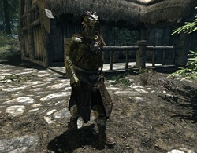

Classes
Em Skyrim podes escolher entre diversas raças antes de começares a tua aventura, que te podem trazer diferentes vantagens. De seguida, tens uma lista detalhada com as características de cada uma delas e as vantagens correspondentes.
Em Skyrim podes escolher entre diversas raças antes de começares a tua aventura, que te podem trazer diferentes vantagens. De seguida, tens uma lista detalhada com as características de cada uma delas e as vantagens correspondentes.
A raça de lagartos humanoides nativos de Black Marsh, são seres esguios e rápidos, conhecidos por sua habilidade de respirar debaixo d'água, além da resistência à doenças, , ambas as habilidades provenientes de diversas gerações de Argonianos que viviam nos pântanos selvagens de Black Marsh. Diferente das outras raças, os Argonianos são capazes de adaptar-se às diferentes situações, tornando-os poderosos combatentes de guerrilha.São habilidosos em esgueirar-se sem serem vistos,em usar armaduras leves e em destrancar fechaduras, além das artes mágicas de restauração e alteração.
Dunmer, ou Elfos negros,são parentes dos Altos Elfos, porém sua pele é acinzentada e seus olhos vermelhos.Seres nativos de Morrowind, província conhecida por seu clima quente e o maior vulcão de todo o continente de Tamriel.Os elfos negros são conhecidos por, além de serem parcialmente resistentes ao fogo, são bons com magias de destruição, lâminas de uma mão, armaduras leves e com a habilidade de esgueirar-se.
Orc, ou orsimer, são parentes distantes dos Altos Elfos, mudados para essa forma após serem amaldiçoados junto de Malacath, príncipe Daedra regente dessa raça.Os orcs são conhecidos por sua bravura em batalha, suas habilidades com armaduras pesadas, espadas, machados, e martelos, não importa o tamanho, sejam grandes ou comuns.
Os Kahjiit são um povo de felinos humanoides, vindos das florestas e desertos de Elsweyr, onde são divididos em diversas tribos.A aparência do Khajiit, a cor de seus pelos depende da fase das duas luas de Nirn.Suas garras permitem que os Khajiit causem muito dano em combates com os punhos, além de sua pericia nas habilidades de esgueirar-se, arrombamento, criação de poções,a arte de roubar, uso de arcos e de armas leves, como uma adaga.
O povo de Skyrim, os Nords, são um povo unido e forte, com seu próprio rei.Os nords são conhecidos por sua ferocidade e lealdade em batalha, por viverem nas terras ao norte, seus corpos são mais resistentes ao frio.São bravos guerreiros, bons com qualquer tipo de arma branca, porém com preferencia à armas de corte, como espada simples ou claymores, são bons com armaduras leves, assim como nas artes de forja e em se socializar com os outros.
Bretons são os nativos d High Rock, conhecidos por terem resistência à certas magias, porém apenas às mais fracas, que não causam dano.São magos exelentes, já que nascem com mais afinidade à magia defensiva, Bretons tem mais facilidade em usar magias de restauração, alteração, ilusão e principalmente invocação. Também são bons em alquimia, além de serem bons em se socializar.